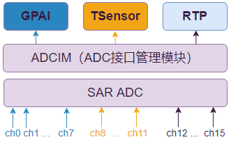

TSensor 使用指南
26 Nov 2024
TSensor//TSen 是一个温度传感器模块，用于测量芯片周围环境的温度。TSensor 模块输出数字信号，以便系统能够对温度变化做出快速响应，从而提高系统的可靠性和稳定性。ADCIM 模块负责统一管理硬件通路，确保 TSensor 模块能够正确读取温度传感器的信号。TSensor 需要依赖 ADCIM 模块来实现其功能。
| 术语 | 定义 | 注释说明 |
|---|---|---|
| ADC | Analog Digital Converter | 模拟数字转换器 |
| ADCIM | ADC Interface Management | 模数转换管理模块 |
| TSensor/ TSen1 | Thermal Sensor | 温度传感器 |
TSensor 和 ADCIM 的关系
TSensor 需要依赖 ADCIM 模块来实现其功能。在系统设计中，TSensor 模块通过硬件通路与 ADCIM 模块连接，由 ADCIM 模块提供必要的信号处理和校准服务，两个模块的关系如图所示：

TSensor 模块支持的特性有：
-
最多支持两路温度传感器，分别位于芯片内部的 CPU 位置、ADC 位置
-
支持周期采样（周期间隔用户可定制）和非周期采样两种模式
-
每次采样的样本数量（1~8）可配置，然后取算术平均
-
支持高、低电平报警设置
-
支持过温保护（发生过温时硬件会触发看门狗重启）
-
ADC 与温度传感器捕获时间可配置
1 TSensor 模块在硬件用户手册文档中也简称为 THS